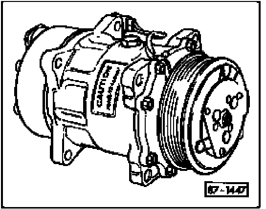
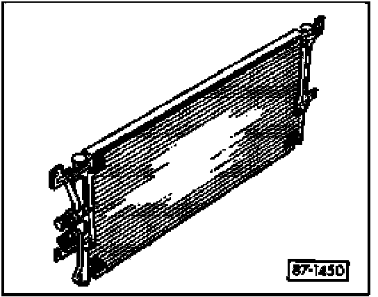
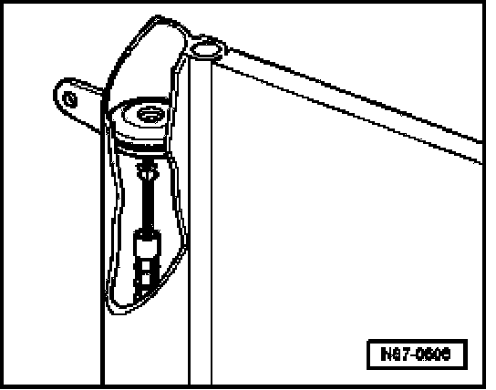
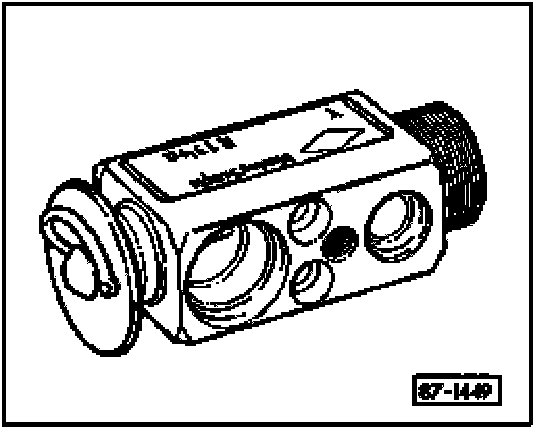
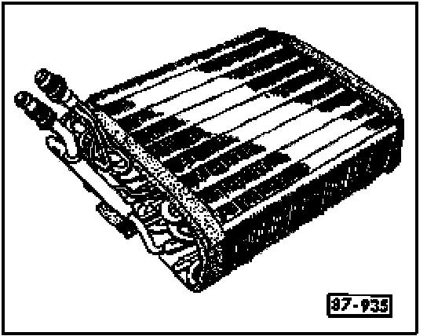
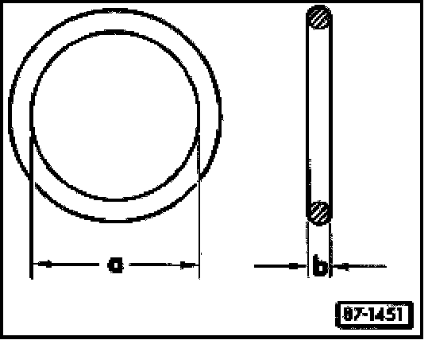
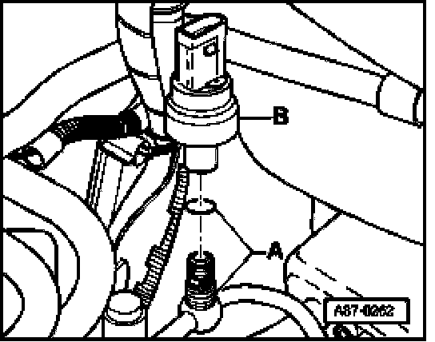

A/C Refrigerant System, Component Overview
A/C Refrigerant System, Component Overview
NOTE: Components illustrated here are for reference only. Actual components installed on Touareg may appear differently.
Compressor

A variable displacement, externally regulated compressor is used in the Touareg. The compressor is driven continuously (no A/C clutch). Compressor output is regulated by the Climatronic control module -J255- based on input signals from the high pressure sensor -G65- and evaporator vent temperature sensors. -J255- provides an output signal to A/C compressor regulator valve -N280- in accordance with the interior temperature setting and refrigerant system pressures/engine load.
The compressor on V6 and V8 models is driven by a ribbed belt on the engine. Compressor on V10 TDI models is driven by a Hardy-coupling attached to the power steering pump.
Low-pressure refrigerant gas from the evaporator is compressed by the compressor. After compression, the refrigerant gas (now high-pressure) flows to the condenser.
NOTE:
- The compressor contains refrigerant oil that is mixable under all temperatures with the refrigerant.
- A label on the compressor may indicate that compressor is for R-134a systems only.
Condenser

The condenser transfers heat from the compressed refrigerant gas to the outside air which causes the refrigerant to change state from a gas to a liquid.
NOTE: The condenser for the R-134a refrigerant system may be identified with a green label.
Reservoir with receiver drier cartridge

Reservoir with receiver drier cartridge is integrated into the condenser.
Any moisture in the system forms as droplets and is absorbed in the drier desiccant cartridge.
NOTE: To ensure optimum system operation, replace receiver drier cartridge every time refrigerant system is opened.
Expansion valve

The expansion valve restricts and controls refrigerant flow to the evaporator thus lowering refrigerant temperature and pressure.
NOTE: The R-134a expansion valve may be identified as such with a label.
Evaporator

Liquid refrigerant entering the evaporator absorbs heat from air passing through the evaporator fins and cools the air. As the refrigerant absorbs heat it turns to vapor and then is suctioned by the compressor.
O-rings

O-rings seal connections between A/C system components.
NOTE:
- Always use correct size O-rings (dimensions -a- and -b-).
- Do not reuse O-rings, always replace. Use only new O-rings that are compatible with R-134a refrigerant and refrigerant (PAG) oil on R-134a systems.
- O-rings for use only on R-134a systems may be red, green, violet or black.
- Lubricate O-rings with the appropriate refrigerant oil before installing (only use PAG oil).
Pressure relief valve

The pressure relief valve is integrated with compressor. At pressures above 40 bar (580 psi), the pressure relief valve opens to air outlet excessive pressure. When the system pressure is reduced, the valve closes to prevent total refrigerant loss.
An adhesive cap on the end of the pressure relief valve pops out when the valve has opened.
High pressure sensor -G65-

The signal generated by -G65- is provided as an input to the Climatronic Control Module -J255- and Motronic Engine Control Module (ECM) -J220-. As the amount of torque needed to drive the A/C compressor varies according to the refrigerant system pressure, the ECM processes this signal in order to enhance engine performance.
High pressure sensor -G65- -B-, transmits a square wave signal to -J255- and -J220- at a rate which varies according to the refrigerant system pressure. -J255- reacts to the pulse rate of the signal from -G65 as follows:
- If the refrigerant system pressure rises, -J255- provides an appropriate signal to the Engine Control Module (ECM) -J220- via the Powertrain CAN Bus for radiator fan(s) speed control (radiator fan speed increases).
- Where excessive or insufficient refrigerant system pressure is present (E.g.: insufficient air flow over condenser or when overcharged), compressor output is regulated via -J255- control of A/C Compressor Regulator Valve -N280- (no or very little load is applied).
A/C system hoses and lines
The mixture of refrigerant oil (PAG oil) and refrigerant R-134a attacks some metals and alloys (for example, copper) and breaks down certain hose material. Use only factory specified replacement hoses and lines.
Hoses and lines are fastened together with threaded couplings/fittings and are retained (to bodywork or components) with specially isolated hose clamps.
NOTE:
- During servicing, all couplings, fittings and related fasteners must be torqued to specifications given in the respective system overviews.
- Ensure that only special tools (as specified) are used while servicing.